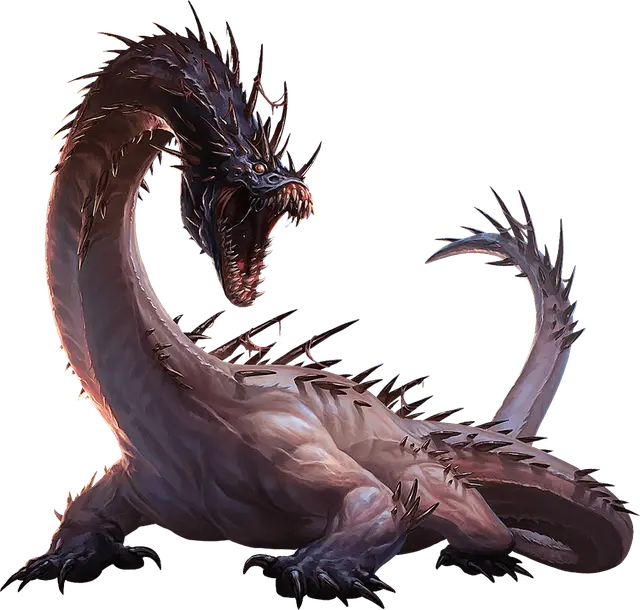

Гертилод
Hertilod
Огромный Монстр, без мировоззрения

Класс Доспеха 14
Хиты 241 (21к12 + 105)
Скорость 50 футов, лазая 50 футов
| мод | спас | ||
|---|---|---|---|
| СИЛ | 23 | +6 | +12 |
| ЛОВ | 18 | +4 | +10 |
| ТЕЛ | 20 | +5 | +5 |
| мод | спас | ||
|---|---|---|---|
| ИНТ | 3 | −4 | −4 |
| МДР | 15 | +2 | +2 |
| ХАР | 10 | +0 | +0 |
Навыки Восприятие +8
Сопротивление урону некротическая энергия; немагический дробящий, колющий, рубящий
Иммунитет к урону яд
Иммунитет к состояниям отравление
Чувства слепое зрение 30 футов, пассивное Восприятие 18, чувство вибрации 60 футов
Опасность 17 (18000 опыта)
Бонус мастерства +6
Особенности
Легендарное сопротивление (3/день). Если гертилод проваливает спасбросок, то он может вместо этого сделать спасбросок успешным.
Сопротивление магии. Гертилод совершает с преимуществом спасброски от заклинаний и прочих магических эффектов.
Чувствительность к шоку. Если гертилод получает урон электричеством, то его скорость уменьшается вдвое до конца его следующего хода, и он должен преуспеть в спасброске Телосложения Сл 15, иначе незамедлительно срыгнет всех проглоченных им существ, каждое из которых упадёт ничком в незанятом пространстве в пределах 10 футов от гертилода.
Паучье лазание. Гертилод может лазать по сложным поверхностям, включая потолки, без совершения проверок характеристик.
Действия
Мультиатака. Гертилод совершает одну атаку Укусом и две атаки Когтем.
Укус. Рукопашная атака оружием: +12 к попаданию, досягаемость 10 футов, одна цель. Попадание: 15 (2к8 + 6) колющего урона плюс 13 (2к12) урона ядом. Если цель — существо с размером не больше Большого, она должна преуспеть в спасброске Силы Сл 20, иначе будет проглочена гертилодом. Проглоченное существо ослеплено и опутано, у него полное укрытие от атак и прочих эффектов, происходящих извне гертилода, и оно получает 13 (2к12) урона ядом от выделений желудка в начале каждого хода гертилода.
Желудок гертилода может держать в себе до двух существ одновременно. Если гертилод получает 40 или больше урона за один ход от существа, находящегося внутри его, гертилод должен в конце этого хода преуспеть в спасброске Телосложения Сл 15, иначе он отрыгнет всех проглоченных существ, которые упадут ничком в пространстве в пределах 10 футов от него. Если гертилод умирает, то проглоченное существо перестает быть опутанным им, и может высвободиться из трупа, потратив 10 футов перемещения, упав ничком.
Коготь. Рукопашная атака оружием: +12 к попаданию, досягаемость 5 футов, одна цель. Попадание: 17 (2к10 + 6) рубящего урона.
Легендарные действия
Гертилод может совершить 3 легендарных действия, выбрав из предложенных ниже вариантов. Одновременно можно использовать только один вариант легендарного действия и только в конце хода другого существа. Гертилод восстанавливает потраченные легендарные действия в начале своего хода.
Спринт. Гертилод передвигается на свою скорость. Это передвижение не провоцирует атаки.
Подпитаться (стоит 2 действия). Гертилод поглощает жизнь из поглощённого существа, что подпитать себя. Каждому существу в желудке гертилода причиняется 10 (3к6) урона некротической энергией, а гертилод восстанавливает количество хитов равное этому урону.
Описание
«Они не драконы и не ящеры. О нет, они гораздо хуже.» — Мелтена Веллейн, волшебница и рулевая.
Когда мертвый бог дрейфует в Астральном море, его труп время от времени порождает паразитирующих чудовищ, известных как гертилоды. Прожорливые и страшные, они напоминают змеевидных ящериц без кожи, с острыми когтями и зияющей пастью, из которой капает яд. Ужасающая обнаженная мускулатура делает гертилодов уязвимым к молниям.